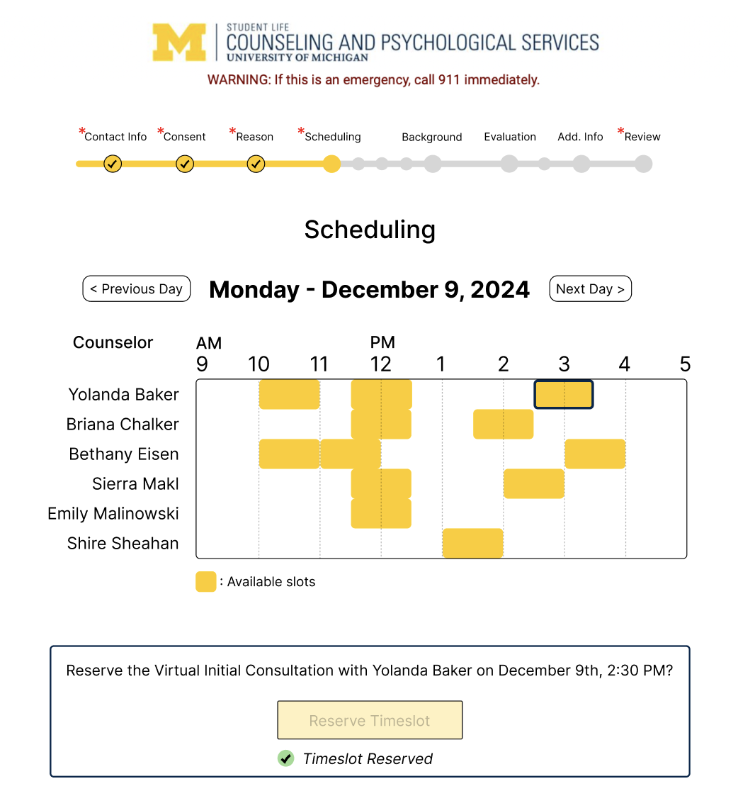
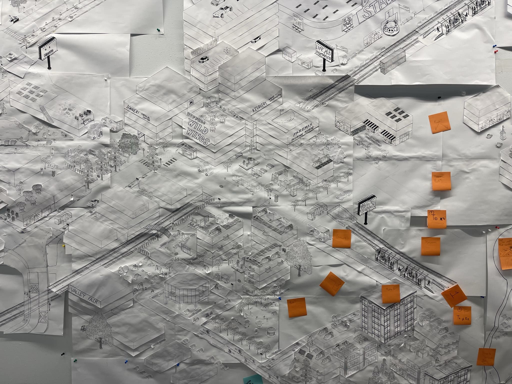
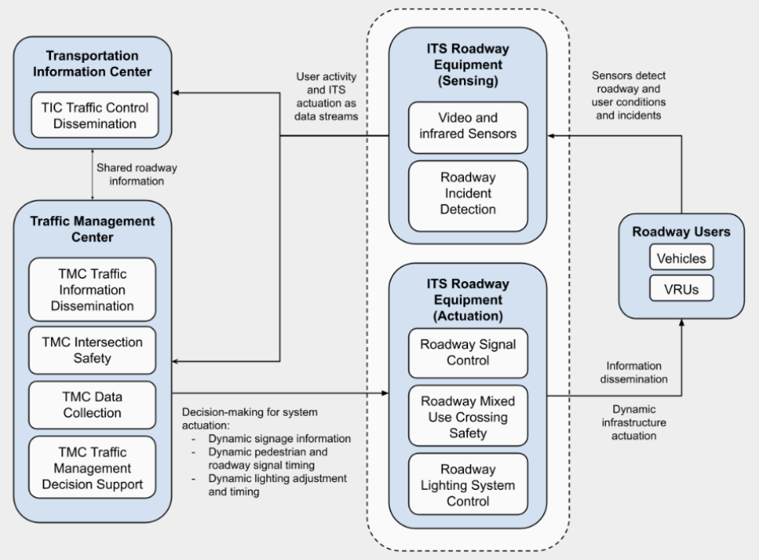
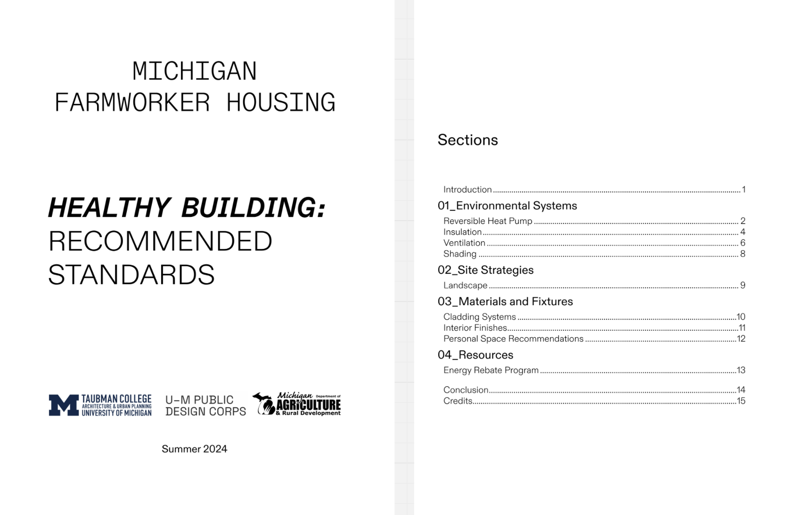
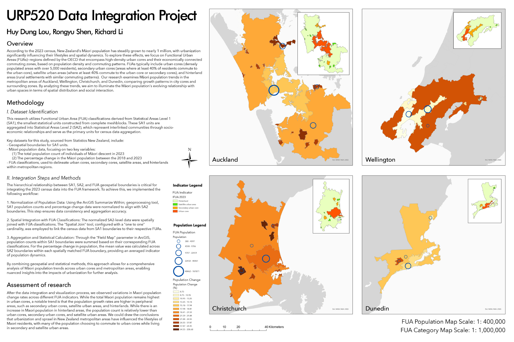
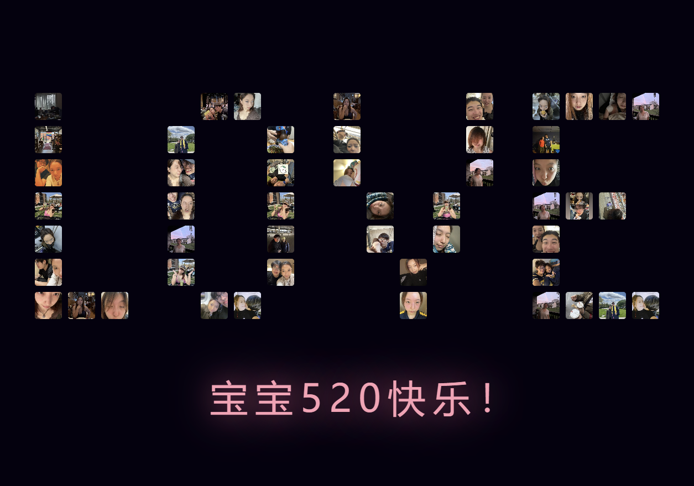

Project Gallery

Safe Detours
Individual, 2025
Leveraging machine learning techniques to predict perceived cycling safety in Austin, Texas for the aim to suggesting safer detours for cyclists

Newtrality
Collaborative, 2025
A strategic design proposal aiming to transform Detroit's Eastern Market into the first publicly documented marketplace in Michigan to have a coordinated shared green economy.

Unmaking "Friction"
Individual, 2024
Find and Inquire the hardship of accessing urban infrastructure - MCard Readers in this case
EECS Projects
Individual & Collaborative, 2023-2026
Some interesting projects I did for my Computer Science Minor and I value these EECS stickers slightly less than my degree

Community Box
Collaborative, 2025
A subscription box service aggregating small contributions from multiple “Third-Place Businesses" (TPBs).

Accessing CAPS: Onboarding Redesign
Collaborative, 2024
A surgical user experience redesign for CAPS at U of M under constraints as an attempt to reduce drop-off rates of the onboarding form

The Incomplete City
Collaborative, 2023
A mural about urban design techniques, strategic planning ideologies, and a simulated urban negotiation process

CityLab Metrics: NYC Taxi Trips
Collaborative, 2023
A NYC Taxi Trip Visualization that creates a story of trips, public transportation, and people in an urban environment

Reconnecting Communities
Collaborative, 2024
2024 Transportation Technology Tournament Winning Solution — Leverage technology to reconnect communities by improving VRU safety in the Downtown Detroit I-375 Corridor

Healthy Building
Collaborative, 2024
A recommendation brochure for MDARD to improve the housing conditions for H2A and Seasonal agricultural workers in Michigan

My Cities:Skylines Gallery
Individual, 2024
A responsive website design and development project that cares for accessibility needs

Māori Urbanism - A GIS Analysis
Collaborative, 2024
A GIS project analyzing and illuminating the Māori population's evolving relationship with urban spaces in terms of spatial distribution and social interaction
DART Manifesto
Collaborative, 2024
A manifesto that calls for combating transportation-induced absenteenism in Detroit, and share our vision of a safe, reliable, and efficient transit network for every Detroiter

Project 520
Individual, 2026
An AI-native everlasting digital anchor of love dedicated to my loving partner